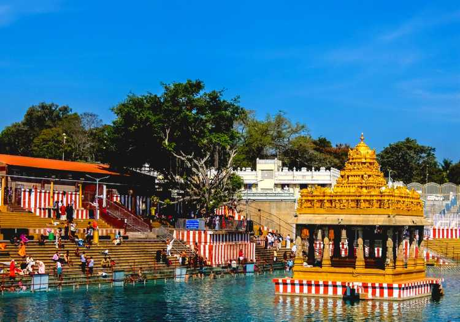
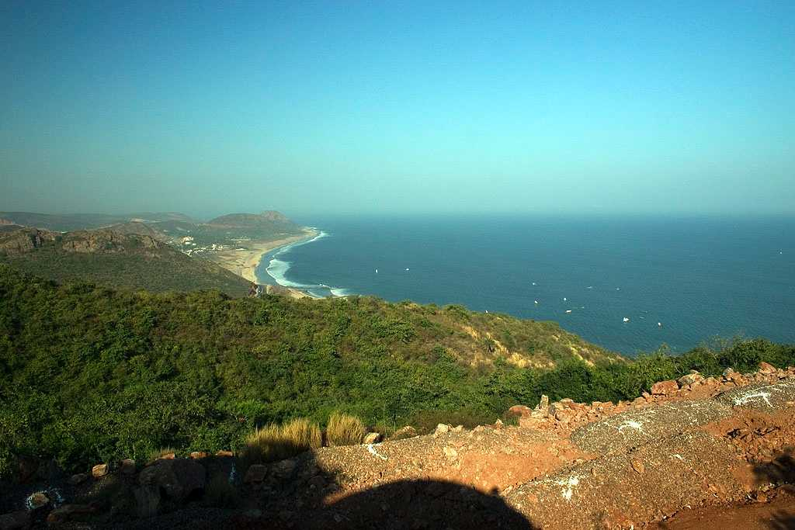

Top places to visit in Andhra Pradesh
1.Amaravathi

Amaravati, also spelled Amaravathi, village, central Andhra Pradesh state, southern India. It is situated on the Krishna River, about 18 miles (29 km) west-northwest of Vijayawada and 20 miles (32 km) north-northwest of Guntur.Amaravathi is a village on the banks of the Krishna River, in the Palnadu district of the Indian state of Andhra Pradesh.[4] It is the headquarters of Amaravathi mandal,[5] and forms part of the Andhra Pradesh Capital Region with its headquarters at new Amaravati 35 km (22 mi) east, whose name is also borrowed from that of the older Amaravathi.[6] Amaravathi was founded by Raja Vasireddy Venkatadri Nayudu in the 1790s as the new capital of his Zamindari estate. He moved there from his former capital Chintapalli in protest of alleged mistreatment by the British East India Company. Amaravathi is named after the ancient Amaravati Stupa, which was unearthed in the process of the town's construction.[7][8] It is adjacent to the ancient Satavahana capital Dhanyakataka (now called Dharanikota).[9] Amaralingeswara temple in the village is one of the Pancharama Kshetras for Hindus. The place was also a historic Buddhist site, as shown by the presence of Amaravati Stupa built during the second century BCE and the third century CE,[10][11] as well as the Dhyana Buddha statue, a large 21st-century Buddha statue in Dhyana posture. It is one of the sites selected for the Heritage City Development and Augmentation Yojana (HRIDAY) scheme of Government of India, to preserve the rich cultural heritage of India.[12][13]
2.Ananthapur

Anantapur, officially Anantapuramu,[8] is a city in Anantapur district of the Indian state of Andhra Pradesh. It is the mandal headquarters of Anantapuru mandal and also the divisional headquarters of Anantapur revenue division.[9] The city is located on National Highway. It was also the headquarters of the Datta Mandalam (Rayalaseema districts of Andhra Pradesh and Bellary district of Karnataka) in 1799. It was also a position of strategic importance for the British Indian Army during the Second World War. Anantapur, city, southwestern Andhra Pradesh state, south-central India. The city is located in the Rayalaseema uplands region, about 80 miles (130 km) south-southwest of Kurnool and 120 miles (190 km) north of Bengaluru (Bangalore), Karnataka state. Anantapur lies on the main road between Hyderabad, Telangana state, (north) and Bengaluru. The city’s name is derived from Ananda, the name of the wife of the diwan (official) of the medieval Hindu kingdom of Vijayanagar who built the city. The main campus of Sri Krishnadevaraya University (established 1981) is just south of Anantapur. In addition, colleges of science, arts, and engineering are located in the city, as is the International Society for Krishna Consciousness Temple (established 2008). Pop. (2001) 218,808; (2011) 261,004.
3.Arkau Valley

Araku Valley, popularly known as Araku, is a scenic hill station in the Vishakhapatnam district of Andhra Pradesh. Relatively lesser known, the hill station has retained its pristine charm. At an elevation of about 3200 ft, Araku is famous for its coffee plantations surrounded by beautiful gardens, streams, waterfalls and valleys that are covered with lush green forests. Situated in the Eastern Ghats, the hill station is about 112 km southeast of Vishakhapatnam. The natural beauty of the place is what attracts tourists from all over the world to the hill station. The Anantagiri Reserved Forest and Sunkrimetta Reserved Forest are a part of the Araku Valley. The Raktkonda, Sunkrimetta, Chitamogondi and Galikonda mountains form a protective wall around the valley. The Galikonda Mountain, at an elevation of 5000 ft, near the hill station is the highest mountain in all of Andhra Pradesh. Araku Valley can be reached by road that goes through thick forests which is an adventure in itself. There are many places of interest like the government silk farm, famous for its mulberry gardens and the tribal museum. The region is home to many tribes and the area is rich in tribal culture.
4.Gandikota

Gandikota is a village and historical fort on the right bank of the Penna river, 15 km from Jammalamadugu in Kadapa district, Andhra Pradesh, India. The fort was the centre of power for various dynasties, such as the Kalyani Chalukyas, Pemmasani Nayakas, and the Golconda Sultanate. Gandikota was the capital of Pemmasani Nayakas for more than 300 years.[1][2][3][4][5] Pemmasani Ramalinga Nayudu constructed the huge fort at Gandikota with 101 towers replacing the previous sand fort constructed by Kaka Raja, Vassals of Kalyani Chalukya rulers. Various additions of Islamic architecture were made during subsequent Muslim rule. In the fort are two ancient temples, dedicated to Madhava and Ranganatha. They are in ruins and the fort area is full of the debris of ages and many ancient structures in varying stages of decay. The large granary, with a vaulted roof, is now used as watchman's quarters. The Jamia Masjid has two adjacent minarets. A heritage festival is held every year in the fort area.[12]
5.Kurnool

Kurnool is a city in the state of Andhra Pradesh, India. It formerly served as the capital of Andhra State (1953–1956). The city is often referred to as "The Gateway of Rayalaseema".Kurnool is also known as The City of Gem Stones. It also serves as the district headquarters of its Kurnool district. As of 2011 census, it is the fifth most populous city in the state with a population of 484,327.[3][5] It is located on the banks of the Tungabhadra river. Although the area has been inhabited for thousands of years, modern Kurnool was founded in the 16th century CE with the construction of the Konda Reddy Fort. The original name of Kurnool is found in historical records as Kandanavōlu or Kandanōlu.[6] It used to be a crossing on the Tungabhadra River, where the bullock cart caravans are believed to have greased their wheels ("kandana" being a reference to grease).[7] The city is often referred to as "The Gateway of Rayalaseema".[8] The Ketavaram[9] rock paintings from the Paleolithic era and are (18 kilometres from Kurnool). Also the Jurreru Valley, Katavani Kunta[10] and Yaganti in Kurnool District have some important rock art and paintings in the vicinity, may be dated from 35,000 to 40,000 years ago.
6.Srisailam
Srisailam is one of the popular tourist destinations in Andhra Pradesh and considered one of the most important pilgrimage centres of Lord Shiva. Srisailam Dam which was built over Krishna river is one of the largest dams in South India. Nagarjunsagar-Srisailam Tiger Reserve, India's largest tiger reserve is spread over 3500 km2. This Sanctuary is a natural habitat of diverse species of flora and fauna. The lush and dense Nallamala Forest range is a popular destination for trekking, hill climbing, forest exploration and research, to which Srisailam town acts as a base camp. Mallikarjuna Jyotirlinga enshrines Lord Mallikarjuna and is an ancient temple built in a Dravidian style with specimens showcasing the Vijayanagara architecture.[6]
7.Thirupathi
Tirupati is a city in the Indian state of Andhra Pradesh. It is the administrative headquarters of the Tirupati district. The city is home to the important Hindu shrine of Tirumala Venkateswara Temple and other historic temples and is referred to as the "Spiritual Capital of Andhra Pradesh".[8] It is located at a distance of 150 km from Chennai, 250 km from Bangalore and 415 km from Amaravati. It is one of the eight Swayam vyaktha kshetras (Self-Manifested Temples) dedicated to Vishnu. Tirupati is a municipal corporation and the headquarters of Tirupati (urban) mandal, Tirupati (rural) mandal, and the Tirupati revenue division.[9] It is the 7th most urban agglomerated city in the state, with a population of 459,985 in 2011 and around 1,004,615 in 2021.[3] As of 2011 census, it had a population of 287,035 making it the 9th most populous city in Andhra Pradesh.[4] It is the second biggest city in Rayalaseema after Kurnool. For the year 2012–2013, India's Ministry of Tourism named Tirupati as the "Best Heritage City".[10] Tirupati has been selected as one of the hundred Indian cities to be developed as a smart city under Smart Cities Mission by Government of India.
8.Vijayawada
Vijayawada, formerly known as Bezawada,[6][7] is the second largest city in the Indian state of Andhra Pradesh[8] and is a part of the state's Capital Region. It is the administrative headquarters of the NTR district. Its metropolitan region comprises NTR and parts of Krishna and Guntur districts.Vijayawada lies on the banks of Krishna river surrounded by the hills of Eastern Ghats, known as Indrakeeladri Hills.[9] It geographically lies on the center spot of Andhra Pradesh.[10] The city has been described as the commercial, political, cultural and educational capital of Andhra Pradesh[10] It is the second largest city in Andhra Pradesh with a population of 17,23,000 [11] in 2021, estimated population of 19,91,189[12] in the Vijayawada Metropolitan Area. It is one of the fastest growing urban areas in India [13] and among the top 10 fastest growing cities in the world according to Oxford Economics report.[14]
9.Vishakapatnam
Visakhapatnam (/vɪˌsɑːkəˈpʌtnəm/, formerly known as Vizagapatam), also known as Vizag, Viśākha or Waltair,[1][15][16] is the largest and most populous city in the Indian state of Andhra Pradesh. It is between the Eastern Ghats and the coast of the Bay of Bengal.[17][18] It is the second-largest city on the east coast of India after Chennai, and the fourth-largest in South India. It is one of the four smart cities of Andhra Pradesh selected under the Smart Cities Mission[19] and serves as the headquarters of Visakhapatnam district.[20] With an estimated output of $43.5 billion, it is the ninth-largest contributor to India's gross domestic product as of 2016.[21][22] Visakhapatnam's history dates back to the 6th century BCE, when it was considered part of the Kalinga Kingdom, and later ruled by the Vengi, the Pallava and Eastern Ganga dynasties.[23] Visakhapatnam was an ancient Port city which had trade relations with the Middle East and Rome. Ships were anchored at open roads and were loaded with cargo transported from Visakhapatnam shore by means of small Masula boats. A reference to Vizagapatam merchant is available in the inscriptions of Sri Bheemeswara Swamy temple (1068 AD), East Godavari District, Andhra Pradesh. During 12th century AD, Vizagapatam was a fortified merchandize town managed by a guild.[24] The city's control was alternating between the Chola dynasty and the Gajapati Kingdom in 11th and 12th centuries,[25][26] until its conquest by the Vijayanagara Empire in the 15th century.[23]